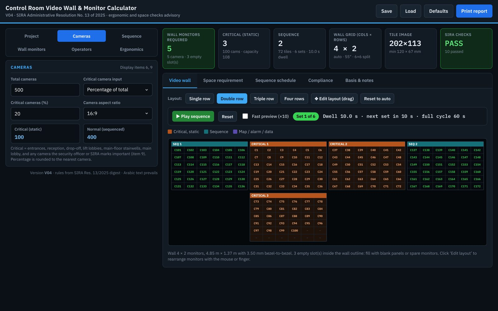
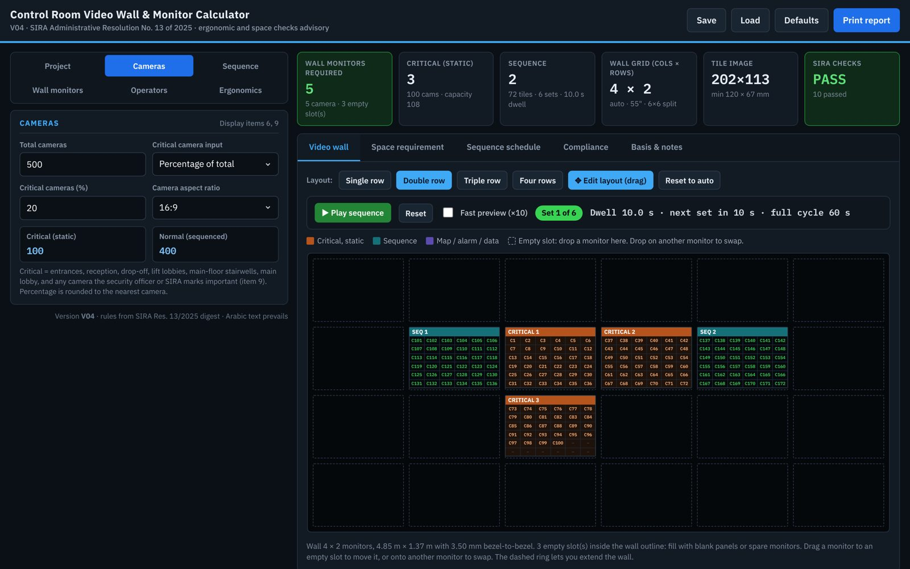
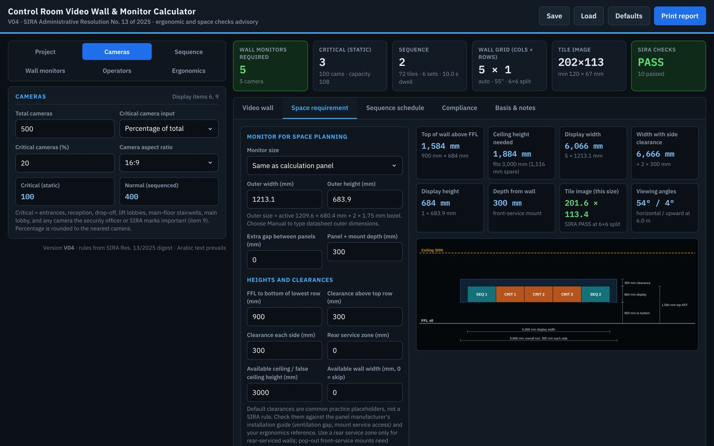
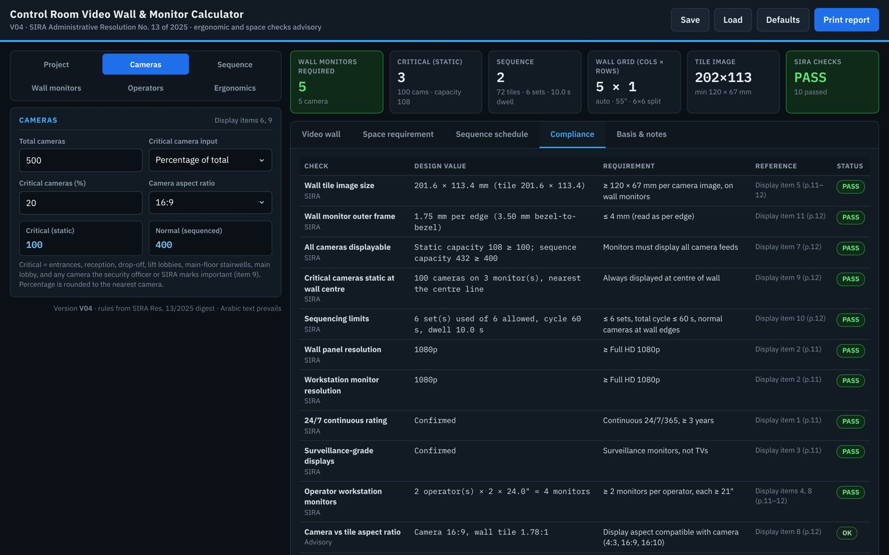
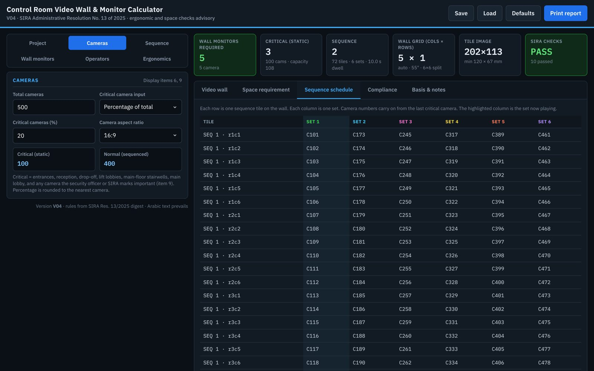
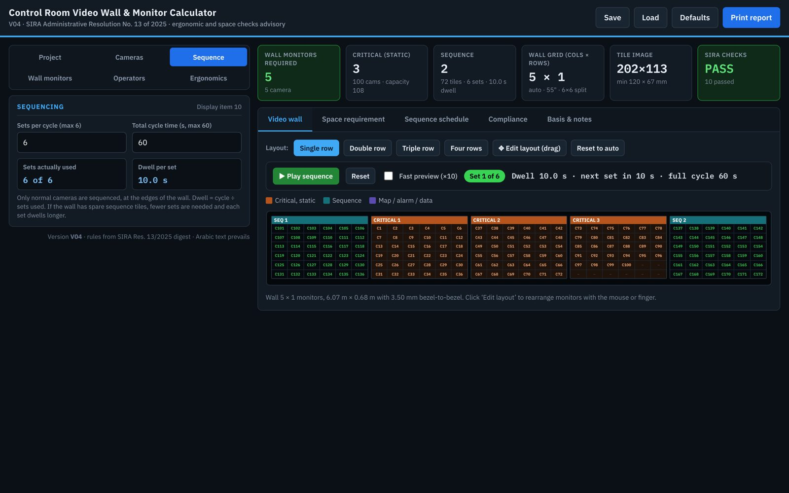

Size a CCTV video wall and check it against SIRA in one window. Enter your cameras, and it works out the wall monitors, the critical and sequence split, and the space the wall needs, then checks every result against SIRA Administrative Resolution No. 13 of 2025.
Created by Aji Gangadharan · Version 4
Windows 10 / 11, 64-bit · about 75 MB · free · no installation needed. The web version runs in any modern browser.
Total cameras with a critical share (percentage or fixed number). It works out the static critical monitors, the sequence monitors and the split per monitor.
Tile image of at least 120 × 67 mm, frame of 4 mm or less, 1080p, 24/7 rating, surveillance-grade displays, and 2 monitors of 21" or more per operator.
Critical cameras stay static at the centre of the wall (item 9). Normal cameras are sequenced at the edges.
Up to 6 sets with a total cycle of 60 s or less (item 10). Dwell time and camera numbers are worked out for you, with live playback.
Single-, double-, triple- or four-row presets, or move, swap and extend monitors with the mouse to match the room.
Height from FFL to the top of the wall, ceiling height needed, and overall width with clearances, with a dimensioned elevation.
Every standard size from 32" to 86" side by side, with the SIRA tile result for each one, or enter the outer size from a datasheet.
Print an A4 report with the project name, compliance table, wall diagram and elevation. Save and load projects as JSON.






C:\Tools. Nothing needs installing.Rules are taken from the English translation of SIRA Res. 13/2025; the Arabic text prevails. Ergonomic and clearance figures are planning guidance, not SIRA rules. Confirm them against the panel manufacturer's installation guide.